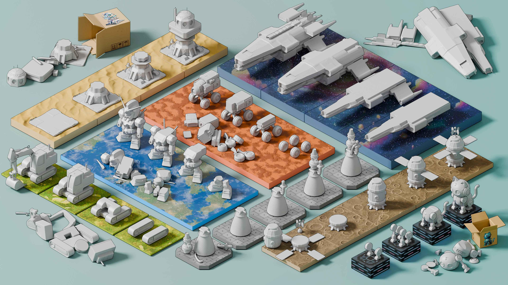

BANG: Dividing 3D Assets via Generative Exploded Dynamics
Research overview
BANG decomposes 3D objects by generating a sequence of progressively separated parts. A pretrained 3D diffusion model, an exploded-view adapter, and temporal attention produce coherent geometry throughout this process. Spatial prompts let users choose regions to separate. The resulting components support detailed refinement, interactive editing, and workflows that print and reassemble individual parts.
Summary · Read original ↗01 / 03Scroll to explore ↓

